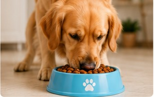

¿Cómo elegir el mejor alimento para tu perro?
Te contamos qué factores tener en cuenta según su edad, tamaño y estilo de vida para asegurar una nutrición completa y balanceada.
La edad manda. Un cachorro necesita más proteína y calcio para crecer; un adulto necesita mantener su peso y energía; y un senior suele necesitar menos calorías y articulaciones cuidadas. Por eso las líneas se dividen en cachorro, adulto y senior: no es marketing, es nutrición.
El tamaño también importa. Las razas pequeñas tienen mandíbulas chicas y metabolismo rápido: les va mejor una croqueta pequeña y más densa en energía. Las razas grandes necesitan control de calcio y condroprotectores para sus articulaciones.
Cómo leer la etiqueta:
- El primer ingrediente debería ser una proteína identificable (carne, pollo, pescado).
- Desconfiá de los rellenos excesivos sin valor nutricional.
- Verificá que diga "alimento completo y balanceado", no "complemento".
Cambio de alimento: siempre gradual. Mezclá el alimento nuevo con el anterior durante 7 a 10 días, aumentando la proporción de a poco. Un cambio brusco suele terminar en diarrea o rechazo.
¿Dudas sobre qué línea le conviene a tu perro? Escribinos por WhatsApp y te asesoramos sin compromiso.